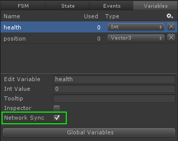

NOTE: Unity has a new Networking system that we will support soon! This document describes working with the legacy networking system.
Networking support is deeply integrated within Playmaker. Samples are available to help you get started.
In order to properly and efficiently set up networking with Playmaker, it is strongly recommended to first read the Unity Networking documentation:
Unity Networking is implemented in Playmaker with Actions and Events:
Playmaker also makes it very easy to synchronize Variables across the network.
Fsm Variable Synchronization
Simply select the variable in either the Variables tab or Global Variables window and check Network Sync.

MAKE SURE you have added a NetworkView component set to observe the PlayMakerFSM Component that has Fsm variables set Network Sync.
To do this, simply drag the PlayMakerFSM Component onto the NetworkView component's "Observed" field.

NOTE: Not all Fsm Variables types can be synchronized. These Fsm variables can be synchronized over the network:
- Float
- Int
- Bool
- String
- Color
- Vector2
- Vector3
- Quaternion
Sending Fsm Events Across The Network
Playmaker also makes it very easy and simple to fire an Event across the network. Simply use the SendRemoteEvent action.
Only global events can be sent remotely, but you can choose the RPC mode: Unity RPCMOD help
Network Internal Messages
Playmaker integrates all the network messages as global built in events: Network Events
The list of messages and their meaning can be found in the unity network class help ( the messages sent section).
Server Connection
Server connection and connections management is subject to the same principles as when they are written with standard script.
Players Instantiation And Disconnection
Players and GameObjects network instantiations are subject to the same principle as when they are written with standard script.